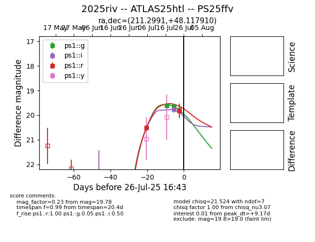

Target 2025riv at 2025-07-26 16:43, see:
TNS: wis-tns.org/object/2025riv
YSE: ziggy.ucolick.org/yse/transient_detail/2025riv
alt names
2025riv (yse,tns)
ATLAS25htl (atlas)
PS25ffv (panstarrs)
coordinates:
equatorial (ra, dec) = (211.2991,+48.11791)
galactic (l, b) = (93.4711,+64.57388)
photometry
last ps1::g=19.78, ps1::i=19.77, ps1::r=19.83
3 ps1::g, 1 ps1::i, 2 ps1::r detections
